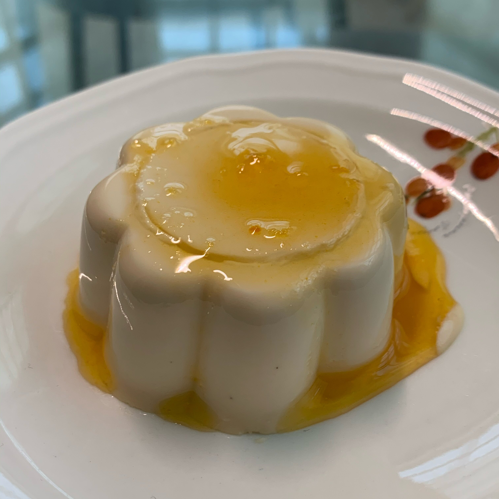

Panna Cotta

Description
Panna Cotta is a traditional Italian custard that everyone is sure to love.
Akin to ice cream, panna cotta can be enjoyed with a variety of different
toppings and flavors.
Ingredients
- 1/3 cup skim milk
- 1 (.25 ounce) envelope unflavored gelatin
- 2 1/2 cups heavy cream
- 1/2 cup white sugar
- 1 1/2 teaspoons vanilla extract
Steps
- Preheat oven to 400 degrees F (200 degrees C). Line a baking sheet with
aluminum foil.
- In a large bowl, mix the flour, 1/2 cup sugar, baking powder, and salt.
Cut in butter until the mixture resembles coarse crumbs. Stir in 1/4 cup
boiling water just until mixture is evenly moist.
- In a separate bowl, dissolve the cornstarch in cold water. Mix in
remaining 1 cup sugar, lemon juice, and blackberries. Transfer to a cast
iron skillet, and bring to a boil, stirring frequently. Drop dough into
the skillet by spoonfuls. Place skillet on the foil lined baking sheet.
- Bake 25 minutes in the preheated oven, until dough is golden brown.